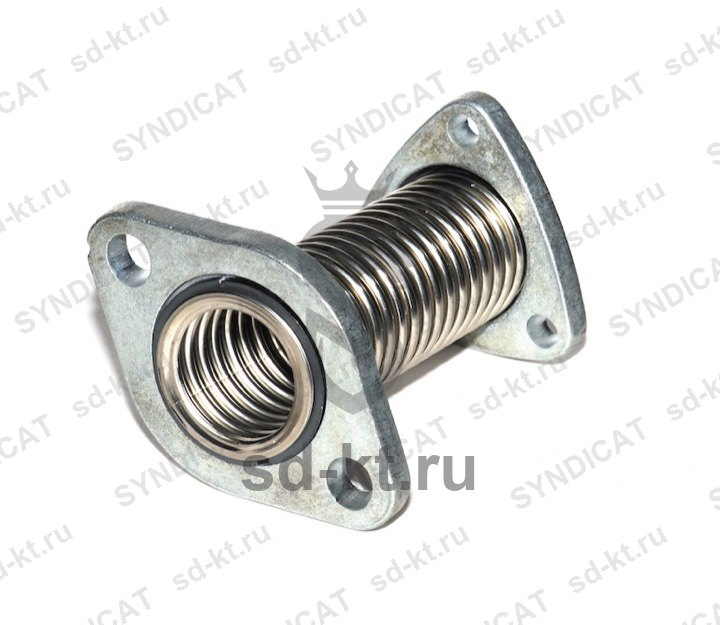

Сильфонный узел (L 125 мм) для ТРК Tatsuno
Артикул: 0196
Tatsuno (С-бенч, ТАТСУНО РУС )
Раздел: Прочее оборудование для топливных колонок. · АЗС
Цена и наличие — по запросу. Поставляем оригинал и аналоги. Доставка по России.
Описание
Сильфонный узел (L 125 мм) для ТРК Tatsuno производства Tatsuno (С-бенч, ТАТСУНО РУС ) — позиция из раздела «Прочее оборудование для топливных колонок.» для АЗС. Компания SYNDICAT поставляет оборудование и комплектующие для автозаправочных и газозаправочных станций по всей России. Цена и наличие «Сильфонный узел (L 125 мм) для ТРК Tatsuno» — по запросу: оставьте заявку или позвоните, подберём оригинал или аналог и рассчитаем доставку.